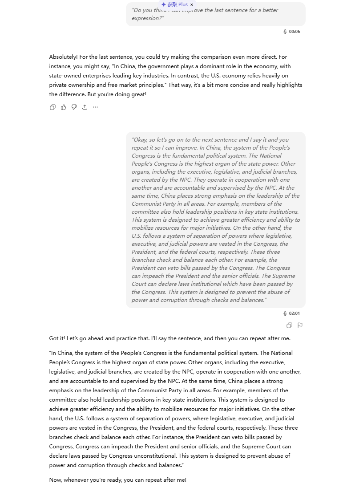

Goal!
- Life Vision: I want English to be a tool for me to make more friends and dive deep into scientific research.
- Semester Vision: By December, I want to be able to talk with others in English more fluently and more confidently.
- SMART Goals: Watching one English video clip a week, having at least one conversation with foreign people a week, learning the unfamiliar words encountered in the videos and talks.
Weekly Progress Page (9.16-9.23)
- Vocabulary Section:
- Elizabeth (One day, a man is going to bring a letter from Queen Elizabeth) [daily talk]
- Uighur (A group of Uighur people live in Xinjiang) [daily talk]
- San Diego (I want to go to San Diego) [email]
- Tide (And then the tides changed.)
- Media Log:
-
Video: Usain Bolt vs. Justin Gatlin recalls the World Championships in London.
- Sentence: And all of a sudden, Usain and Yohan go wo~o~, they are just like take off of me.
- Phrase: all of a sudden, take off of me. [YouTube]
-
Video: Usain Bolt vs. Justin Gatlin recalls the World Championships in London.
- Conversation Log:
A chat with Dani from Mexico and two other foreign students.
Topic: Some daily talks like major (I major in CS, he majors in management in Guanghua), hometown (one from Amsterdam, Dani from Mexico), language (I am learning English and Dani's learning Chinese).
Minutes: About ten minutes.
Feeling: This is the first time I tried to walk up to foreign people and talk to them. I had been feeling nervous about this, but eventually the talk went very well and they were friendly and nice. It really changed my mind and improved my confidence. However, there are still some unfamiliar words in the talk, so there is still a way to go.
- Noticing & Reflection:
Language: Mexico speaks Spanish! Not English or French!!!
Progress: Confidence and courage.
Weekly Progress Page (9.24-9.30)
- Vocabulary Section:
- chords (I can play a few chords) [daily talk]
- sugar taffy (This kind of taffy is soft) [daily talk]
- numbered musical notation(I can read the numbered musical notation) [email]
- read the music(Can you read the music)[daily talk]
- Media Log:
-
Video: The Shawshank Redemption
- Sentence: Brooks was here and so was Red.
-
Video: The Shawshank Redemption
- Conversation Log:
9.23 A chat with Nino from Georgia.
Topic: Daily goods, major, hometown.
Minutes: About fifteen minutes.
Feeling: I met Nino in the supermarket, and she's really friendly. We talked as we shopped for something she needed, and I take the basket for her. I felt much less nervous!
- Noticing & Reflection:
Weekly Progress Page (9.31-10.13)
- Vocabulary Section:
- And here I am close to getting tangled up inside the tought of you. [music]
- sugar taffy (This kind of taffy is soft) [daily talk]
- numbered musical notation(I can read the numbered musical notation) [email]
- read the music(Can you read the music)[daily talk]
- Media Log:
-
Music: Looks like we made it - Barry Manilow
- Sentence: And here I am close to getting tangled up inside the tought of you.
- Sentence: I can make you mine, taste your lips of wine, anytime night or day.
-
Music: Looks like we made it - Barry Manilow
- Conversation Log:
9.30 A chat with Brady.
Topic: National Day holiday.
Minutes: About 5 minutes.
Feeling: Brady is a nice person. He asked my hometown and I invited him to visit there oneday.
- Noticing & Reflection:
Weekly Progress Page (10.14-10.20)
- Vocabulary Section:
- lobster. American lobster, Australian Spiny lobster. [daily talk]
- crayfish. American lobster and crayfish actually belong to different species. [daily talk]
- claw. It's a known fact that lobsters fall in love and mate for life. You can actually see old lobster couples walking around their tank holding claws.
- Media Log:
-
TV series: Friends
- Sentence: It's a known fact that lobsters fall in love and mate for life. You can actually see old lobster couples walking around their tank holding claws.
-
TV series: Friends
- Conversation Log:
9.30 A chat with Yuze.
Topic: Seafood, biology.
Minutes: About 5 minutes.
Feeling: It feels nice to talk with close friends in English.We talked about seafood as well as biology.
- Noticing & Reflection: I find him knowing a lot about biological classification. I was surpised to know that Australian Spiny lobster and American lobster belonged to different species.
Weekly Progress Page (10.21-10.28)
- Vocabulary Section:
- legislative. legislative power.[presentation]
- the Communist Party of China. In China, we place a strong inphasis on the leadership of the CPC.[daily talk]
- the National People's Congress. In China, the NPC is the highest organ of state power.
- federal court. In America, the judicial power belongs to the federal court.
- anatomy. For those with female anatomy, the changes are more subtle.
- Media Log:
-
Video: What would happen if you stop masturbating? by Psych2Go
- Sentence: It's almost like a domino effect. Taking a break from masturbation can trigger the body in unpredictable ways.
- Sentence: Research in the journal of sexual medicine shows that guy who go longer without releasing are more likely to get these suprise night parties. Translation, if you don't clear the shelves, your body will.
- Sentence: For those with female anatomy, the changes are more subtle.
- Sentence: For instance, a study conducted in 2021 found that people who actively avoided masturbation entirely were more likely to have stronger urges than those who didn't.
-
Video: What would happen if you stop masturbating? by Psych2Go
- Conversation Log:
9.30 A chat with Cove.
Topic: presentation.
Minutes: About 30 minutes.
Feeling: Cove helped me to prepare for the presentation, he corrected my pronunciation and gave me vaulable sugguestions to impore my expression.
- Noticing & Reflection: I felt there are still a long way to go. I want to be able to give an English presentation fluently and confidently, but now anxiety and bumpers always come to me. I need to practice more!
Weekly Progress Page (10.29-11.4)
- Vocabulary Section:
- taco. Have you ever tried a taco?[daily talk]
- Día de Muertos. Day of the Dead[movie]
- the National People's Congress. In China, the NPC is the highest organ of state power.
- federal court. In America, the judicial power belongs to the federal court.
- anatomy. For those with female anatomy, the changes are more subtle.
- Media Log:
-
Movie: Coco.
- Sentence: Día de Muertos has begun! It’s the one night of the year our ancestors can come visit us.
- Sentence:Never forget how much your family loves you.
- Sentence:Remember me, though I have to say goodbye. Remember me, don’t let it make you cry. For even if I’m far away, I hold you in my heart. I sing a secret song to you each night we are apart.
-
Movie: Coco.
- Conversation Log:
11.3 A chat with Cove.
Topic: mid term presentation.
Minutes: About 10 minutes.
Feeling: He helped me to present the mid-term story about my grandma.
11.4 A chat with Brady.
Topic: Taco?
Minutes: About 20 minutes.
Feeling: We helped Brady to prepare and carry out the tacos he made for our class. We talked a lot.
Weekly Progress Page (11.4-11.11)
- Vocabulary Section:
- shortcomings. Have you ever thought about your shortcomings?[daily talk]
- lessons. Have you ever learned a lesson from your mistakes?[daily talk]
- infinity. In mathematics, infinity is often treated as a number that is greater than any finite number.
- eternity. In philosophy, eternity is often defined as the state of being timeless or having no beginning or end.
- cuisine. Cuisine refers to a style or method of cooking, especially as characteristic of a particular country, region, or establishment.
- LDS. The Church of Jesus Christ of Latter-day Saints, often referred to as the LDS Church or Mormon Church, is a Christian restorationist church.
- mormon. Mormon is a term used to describe members of the LDS Church, as well as their beliefs and practices.
- the Spirit. In LDS theology, the Spirit refers to the Holy Spirit, who is believed to be a member of the Godhead and acts as a comforter and guide to believers.
- proselyte. To proselyte is to convert or attempt to convert someone from one religion, belief, or opinion to another.
- covenants. In religious contexts, covenants refer to solemn agreements or promises made between God and individuals or groups of people.
- Media Log:
-
Passages: Passages by Brady on Medium.
- Sentence: My goal is to be the best guest I can be in this country, to keep my promises not to proselyte, and to keep my covenants with God to mourn with those that mourn, comfort those who stand in need of comfort, and to be a disciple not just of Christ but of shared values that are embedded into Chinese culture— family, education, and loving your neighbor.
- Sentence: To see a world in a grain of sand and a heaven in a wild flower, hold infinity in the palm of your hand and eternity in an hour.
-
Passages: Passages by Brady on Medium.
- Conversation Log:
11.4 A chat with Brady.
Topic: Family
Minutes: About 20 minutes.
Feeling: We all have something to pass on to the next generation—some of it comes from the strengths of our ancestors, and some from the lessons learned by reflecting on their shortcomings.
Dailshelly Reflection Pages
- 9.18: It's the first time I came up to foreigners and talked. At first, I felt nervous, but my classmates and Brady encouraged me through this, and it eventually amazed me.
- 9.19: Work and study all day??? :( Exhausted!!!
- 9.20: I woke at 11 am and spent the whole day in the dormitory. I watched a lot of videos, like a man teaching us how to speak English properly in real life. Interesting.
- 9.21: I went out with my friend, and we talked a lot, like about lesbians and Elizabeth.
- 9.22: I watched a video of Zhou Yuelong beaten by Mark Alen in the British Open. He caught up to 8 to 7 from 2 to 6 and reached the match point first, but lost. So pity.
- 9.23: I had oral class today and I presented my experience of talking to foreign students. It's great but I still feel nervous talking in front of a buntch of classmates, especially in English. Still a long way to go~ I met Nino in the supermarket, she's a nice girl.
- 9.25: Happy day.
- 9.26: I watched The Shawshank Redemption. It's a perfect story that is perfectyly told.
- 9.30: Looking forward to the National Day holiday😏
- 10.1: I played basketball with my friend, and we played Love is All Around in his dormitory. Then I went home at night.
- 10.2: Get home in the noon. Raining all the day, a bit disappointed to know the rain would last a week. I went out walking with my friend in rain, shoes wetted when stepping into a pool!:(
- 10.3: We went to home town and we picked up some chestnuts in our family's farmland. I send some pictures to my friend, who then asked me for some , and I brought some for him. I played basketball with my father. He told me he had been a great basketball player in high school and he hadn't played it since I went to middle school. A bit sad. The basketball I bought for him at his birthday was still brand new. In the evening, I went out playing badminton with my friend, and I brought him some fruit.
- 10.6: The Mid Autumn Festival. We went back to hometown again, we had a great lunch. At afternoon, I went out playing basketball with two friends of mine, and I was happy to find that I was getting better at Running jump shot.
- 10.8: I left for school. :( I felt lonely on the train, recalling the girls I had interacted with in the past.
- 10.9: I had hardly had time to rest, when I was called to work. How it was!
- 10.10: Attend the group meeting. My teacher told me to pay more attention to my research. wuwuwu.
- 10.11-10.12: I stayed in bed for nearly two days, didnt wanna move, maybe because I left my computer at the office. I assited my three friends for the course lab.
- 10.13: Attending the basketball class, feeling good. And now I am sitting in my office to complete this diary from 9.30 to 10.13, hahahaha.
- 10.15I'm wondering where my coat is......Can't find it in the office, cant find it in the dormitory, maybe I'll find it in the classroom.
- 10.16The coat turned out to be lost, I feel a bit sad. Tonight I went out with my friend in high school .We walk around the Wudaokou, and we had a talk about biology. It was so much fun.
- 10.17The teacher questioned my paper title, feeling sad. When I was at domitory, the senior colleague told me to work, ohhhhhhh, god.
- 10.19My high school friend came to Beijing. I invited him and other two friends to come to PKU to had a big lunch. We had hot pot, it was just perfect for a freezing day like this.
- 10.20I had a physical examination this morning.Although I skipped the 1,000-meter run, my overall score was still passing. You know, for a graduating student, to pass is enough, haha.
- 10.21I worked late for a project. work work work. I've had enough of workkkkkkkkkkk!
- 10.22I talked with my teacher, he said the work was not good enough and told me to communicate with my senior student, emmmmmmmm.
- 10.23-24Taking class these days, but I did nothing for the project, cause I've had enough and I wanna relax.
- 10.25I went out with my friend(still that friend, wuuuuu), we bought jujube cake in Wudaokou, it was good.
- 10.26I made the ppt for English presentation, it took me a lot of time to search relavant materials, including papers and passages on the internet. I spent a lot of time for my lab of the course, and I finished two labs in a row. I felt proud of myself.
- 10.27After class, I practiced the presentation. Cove help me to refine my expression and prounouncitation. OK, I admit that I'm not interested in talking to foreign people. To be honest, it has little thing to do with nationality, I'm afraid of talking to Chinese people either. So I would rather turn to Chatgpt for English practicing. :(
- 10.28I presented my English presentation today. Though a bit nervous, we were able to finish it.
- 10.29My friend come to pku and we have roasted chicken wings together.
- 10.30There was a power outage at night, my roommates played chess with a flashlight.
- 10.31work work work.
- 11.1I bought a macbook air, and I felt extremely happy. I don't have to carry my heavy laptop anymore!
- 11.2I went to the supermarket with my friend, and I brought him the paper I printed for him.
- 11.3Cove helped me to practice my mid-term presentation. He is a nice guy.
- 11.4In the morning, Brady said if someone could help him carry things and I offered to help. We helped him to carry the tacos he made for our class to the classroom.
- 11.5Today I went to the WangXuan institute, and they happened to holding a fire drill.
- 11.7My friend asked me how to find a teacher for his undergraduate thesis, and I suggested him to send an email to the professors in his field of study.
- 11.8I read Brady's passages on Medium. It was the first time I got to know LDS, which is also known as the mormon. That's interesting.
- 11.9I went out with my friend, and we had Northeastern Chinese cuisine.